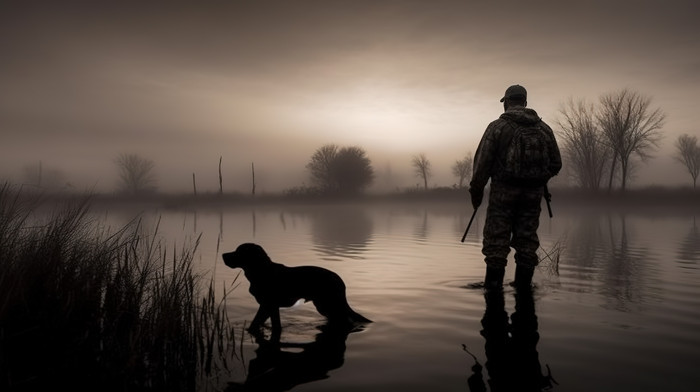

¿Qué es la Caza de Agua?
La caza de agua es una actividad que se centra en la captura o el abatimiento de aves acuáticas. Se lleva a cabo principalmente en humedales, lagos, ríos y costas. Los cazadores se especializan en la observación y el manejo de estas especies, empleando tácticas y herramientas adecuadas para este tipo de caza.
Tipos de Aves en la Caza de Agua
- Patos: Son las aves más comunes en la caza de agua, con diversas especies que migran a diferentes regiones para su reproducción.
- Gansos: Los gansos son otra especie muy apreciada, conocidos por su tamaño y su habilidad para volar largas distancias.
- Cisnes: Aunque su caza está más regulada en muchas partes del mundo debido a su protección, algunos cazadores se especializan en estas majestuosas aves.
- Garzas y otras aves acuáticas: Además de los patos y gansos, en la caza de agua se pueden cazar otras aves que habitan en ambientes acuáticos, dependiendo de las regulaciones locales.
Equipos y Técnicas de Caza de Agua
La caza de agua requiere equipos específicos para adaptarse al entorno acuático y a las características de las aves que se cazan:
- Escopetas de Caza: Las escopetas de cañón corto y largo son las más utilizadas en la caza de agua, ya que permiten realizar disparos rápidos y certeros sobre aves en vuelo.
- Barcas y Balsas: Los cazadores suelen usar barcas o balsas camufladas para desplazarse de forma discreta y acercarse a las aves sin que estas se alarmen.
- Decoys (Cebos): Son figuras que imitan a las aves acuáticas y se colocan en el agua para atraer a las aves reales, facilitando su captura.
- Perros de Caza: Los perros de caza son empleados para recuperar las aves abatidas del agua, ya que su entrenamiento les permite nadar y buscar eficazmente.
Normativas y Regulación de la Caza de Agua
La caza de agua está estrictamente regulada por leyes y normas para proteger las especies acuáticas y evitar la sobreexplotación. Estas regulaciones incluyen:
- Temporada de Caza: Hay temporadas específicas durante el año en las que se permite la caza de aves acuáticas, generalmente fuera de su período de reproducción.
- Licencias y Permisos: Los cazadores deben contar con licencias especiales para practicar la caza de agua, que suelen estar reguladas por entidades gubernamentales o ambientales.
- Protección de Especies: Muchas especies de aves acuáticas están protegidas por leyes nacionales e internacionales, lo que limita su caza o establece restricciones en su captura.
Es fundamental que los cazadores respeten estas regulaciones para asegurar la sostenibilidad de las poblaciones de aves acuáticas y evitar daños al ecosistema.